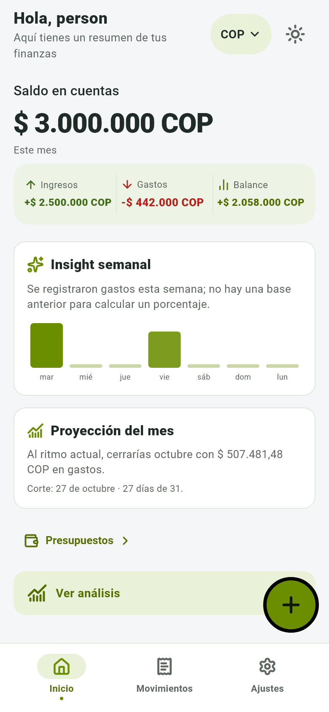
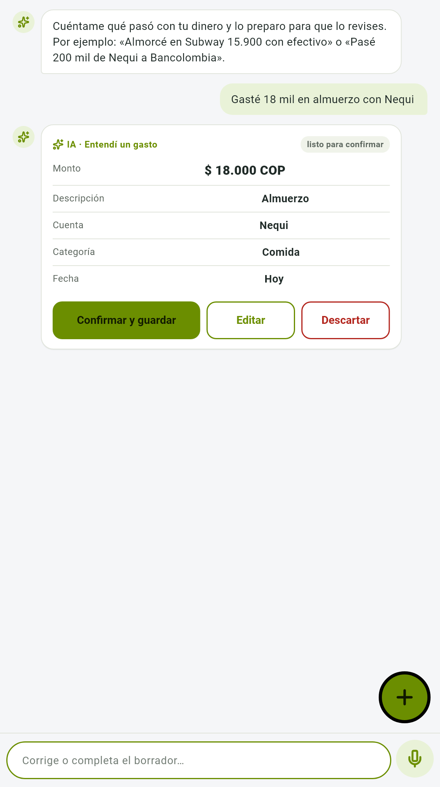
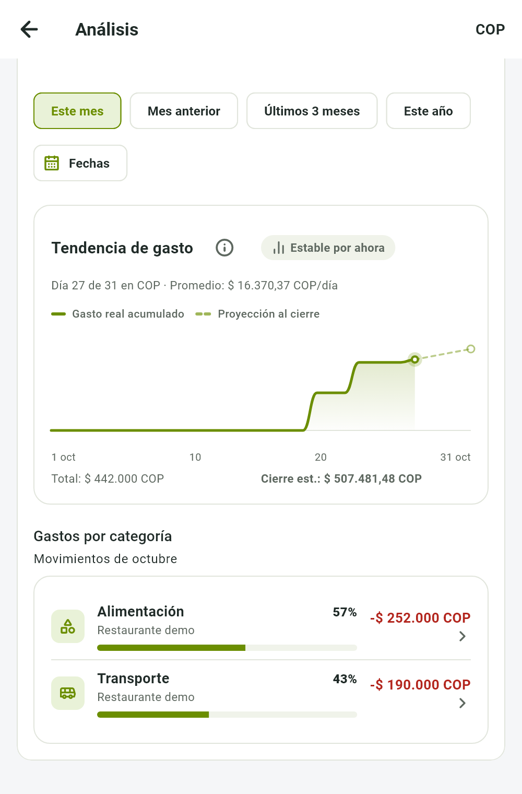

Contexto · 2024
de las operaciones monetarias en Colombia se hizo por canales digitales
Banca de las Oportunidades, 2024
+3,7 pts sobre 2023 (62,9 %)
Pagar ya es digital. Registrar, no.
Aplicación móvil Android para el registro y análisis de gastos personales con asistencia de IA para la captura automática de gastos
Ingeniería de Sistemas y Computación · Sede Facatativá
6 de noviembre de 2026

Buenas. Somos David, Maicol e Ivan, de Ingeniería de Sistemas y Computación.
Presentamos Finance AI, una aplicación Android para registrar y analizar gastos personales, en la que una inteligencia artificial propone el registro y la persona lo confirma.
Seguiremos el orden de los aspectos de evaluación y al final mostraremos la aplicación funcionando. El código QR permite descargarla.
Aspecto 7 · Metodología y socialización (escala 0,5 a 5,0). Según la plantilla, es una lista de verificación para el ensayo: el jurado califica la forma de presentar, no este contenido. 7.1 Presentación personal (1,0): reparte roles y define la vestimenta · 7.2 Dominio de grupo (1,0): quién presenta cada parte · 7.3 Presentación de diapositivas (1,0): revisa orden, claridad y poco texto · 7.4 Manejo verbal y corporal (2,0): ensayen voz, ritmo, contacto visual y postura.
La fecha es el 6 de noviembre de 2026. Si el docente es Oscar Jobany Gómez Ochoa, como en el PGC, agradecerle. La portada no lleva código estudiantil.
Empecemos por el contexto y el problema.
Contexto · 2024
0,0 %
de las operaciones monetarias en Colombia se hizo por canales digitales
Banca de las Oportunidades, 2024
+3,7 pts sobre 2023 (62,9 %)
Pagar ya es digital. Registrar, no.
En cada compra
Cada compra exige completar y revisar esos datos, y el esfuerzo se repite.
Al final de la semana
Sin registro sistemático no se sabe en qué se gasta, y se decide sin información.
Pregunta guía. ¿Cómo puede una app móvil con asistencia de IA facilitar el registro y el análisis de los gastos personales, reduciendo el esfuerzo de captura?
Afecta a cualquiera que controle sus gastos desde el celularLa vida financiera de las personas ocurre cada vez más en el celular: en 2024, el 66,6 % de las operaciones monetarias en Colombia se hizo por canales digitales, según la Banca de las Oportunidades; en 2023 era el 62,9 %. Pagar ya es digital, pero llevar el control de los propios gastos sigue siendo manual.
Registrar una sola compra exige escribir el monto, elegir la cuenta, asignar una categoría y revisar la fecha. Ese esfuerzo se repite con cada compra y el registro se interrumpe. Sin un registro sistemático, la persona no sabe en qué gasta y decide sin información.
Esto afecta a cualquiera que controle sus gastos desde el celular; por eso es una aplicación Android, que pensamos publicar en Google Play. La pregunta que guía el proyecto es cómo puede una aplicación móvil con asistencia de inteligencia artificial facilitar el registro y el análisis de los gastos, reduciendo el esfuerzo de captura y contribuyendo a formar el hábito de control financiero.
Aspecto 1 · Organización (escala 0,5 a 5,0). El jurado evalúa: contexto claro; problema bien definido; importancia del proyecto; objetivos medibles y alineados con el problema. 1.1 Introducción (1,0): contexto del proyecto y qué se presentará · 1.2 Planteamiento del problema (1,5): problema, a quién afecta y pregunta guía.
Lo que conviene esperar antes de que aparezca lo siguiente (recomendación, ~45 % de lo que tardas en decirlo): paso 1: 12 s · paso 2: 10 s.
La semana con huecos es ilustrativa, no un dato medido. Las cifras de la tarjeta 1 (66,6 % en 2024, 62,9 % en 2023, +3,7 puntos) salen del Reporte de Inclusión Financiera 2024 de la Banca de las Oportunidades y de una presentación de la Superintendencia Financiera, que lo rotula «Internet/App»; confirmar en el PDF si mide número o valor de operaciones y no decir cuál. La cifra de retención de apps de finanzas (4,2 %, Curry 2026) se dice en la escena 7, no aquí. Texto aprobado del problema: PGC-PROPUESTA.md, v5.
Con ese problema claro, veamos por qué vale la pena resolverlo.
Interpretar un gasto con IA está consolidado en el mercado, y eso reduce el esfuerzo de registrar.
Una app Android, con publicación prevista en Google Play.
La IA solo propone; ella confirma, edita o descarta antes de guardar.
Herramientas de bajo costo y servicios con nivel gratuito o cuota de prueba.
Menos esfuerzo para registrar, sin quitarle el control a la persona.
El proyecto se justifica por cuatro razones. La inteligencia artificial para interpretar gastos ya es accesible, lo que permite reducir el esfuerzo de registrar.
Sirve a cualquier persona que quiera controlar sus gastos desde el celular: es una aplicación Android, con publicación prevista en Google Play.
La persona conserva el control: la inteligencia artificial solo propone, y ella confirma, edita o descarta antes de guardar.
Y el presupuesto está al alcance: herramientas de bajo costo y servicios con nivel gratuito o cuota de prueba, sujetos a las condiciones de los proveedores.
1.3 Justificación (1,0): por qué es importante y qué aporta.
Lo que conviene esperar antes de que aparezca lo siguiente (recomendación, ~45 % de lo que tardas en decirlo): paso 1: 6 s · paso 2: 5 s · paso 3: 4 s.
La propuesta dice «servicios con niveles gratuitos o cuotas de prueba, sujetos a las condiciones vigentes de los proveedores». Si preguntan por costos: docs/receipt-ai-cost-measurement-2026-10-26.md.
Con esa justificación, estos son los objetivos.
Objetivo general
Desarrollar una aplicación móvil para el registro, la categorización y el análisis de gastos personales, con asistencia de IA para la captura automática de gastos, aplicando la metodología CDIO, con el fin de reducir el esfuerzo de captura de los gastos y contribuir a la formación del hábito de control financiero en los usuarios.
Alcance, requisitos y flujo de confirmar, editar o descartar
Arquitectura, modelo de datos y pantallas de captura y confirmación
Captura con IA por foto, voz o texto, con confirmación
Gastos agrupados por categoría en el período elegido
Publicar la app en Google Play y validarla con usuarios reales
Nuestro objetivo general es desarrollar una aplicación móvil para el registro, la categorización y el análisis de gastos personales, con asistencia de IA para la captura automática de gastos,
aplicando la metodología CDIO,
con el fin de reducir el esfuerzo de captura de los gastos y contribuir a la formación del hábito de control financiero en los usuarios.
Hay un objetivo específico por fase. Concebir: definir el alcance, los requisitos y el flujo de confirmar, editar o descartar. Diseñar: la arquitectura, el modelo de datos y las pantallas de captura y confirmación.
Implementar, en dos objetivos: la captura con inteligencia artificial por foto, voz o texto, y el análisis de gastos por categoría en el período elegido.
Operar: publicar la aplicación en Google Play y validarla con usuarios reales.
1.4 Objetivos (1,5): objetivo general y objetivos específicos. Recuerda lo que evalúa el aspecto 1: objetivos medibles y alineados con el problema.
Lo que conviene esperar antes de que aparezca lo siguiente (recomendación, ~45 % de lo que tardas en decirlo): el objetivo general va a mano (pasos 1 a 3: qué, cómo y para qué; avanza con → quien acompaña) · los específicos van solos: paso 4: 8 s · paso 5: 6 s.
El objetivo 5 usa el ajuste del 30-oct-2026: publicar en Google Play. La propuesta escrita (PGC-PROPUESTA.md, main.tex) habla de pruebas funcionales y una encuesta de usabilidad. Si el jurado tiene el documento, explicar la diferencia. Es un objetivo, no un resultado: la app todavía no está publicada. Reducir el esfuerzo y formar el hábito son el propósito, no un resultado medido.
Veamos ahora lo que construimos.

Propuesta de registro · datos de demostración
Propuesta de la IAsolo con las cuentas y categorías de esa persona
Si falta la cuenta o la moneda, pregunta en lugar de adivinar: «¿En qué cuenta?»
Esto es lo que construimos. La persona escribe «almuerzo 18 mil con Nequi», fotografía un recibo o dicta; en Android, el dictado se transcribe en el teléfono y entra como texto.
El servidor pide a un modelo de inteligencia artificial una propuesta con monto, descripción, cuenta, categoría y fecha, y solo puede usar las cuentas y categorías de esa persona. Si falta un dato, como la cuenta o la moneda, pregunta en lugar de adivinar.
La persona revisa, corrige, confirma o descarta. Al confirmar, el movimiento se guarda una sola vez, aunque la solicitud se repita. El modelo nunca escribe en el registro financiero, y si la IA falla queda el formulario manual.
Lo que conviene esperar antes de que aparezca lo siguiente (recomendación, ~45 % de lo que tardas en decirlo): paso 1: 7 s · paso 2: 10 s.
Las vistas son renders del 27-oct-2026 con datos sintéticos. «Una sola vez»: la confirmación es idempotente (restricción única por usuario y propuesta, migración 0017). Si la IA aún no está disponible en la demostración, mostrar el formulario manual.
Lo confirmado alimenta el resto de la aplicación.

Gastos por categoría · octubre
datos de demostración · período elegible
Movimientos · búsqueda y filtros
Presupuestos · avance de lo confirmado
Hasta dónde llega
Android y Windows con el mismo código
Cuentas, categorías, gastos, ingresos, transferencias, presupuestos, historial y panel de inicio
Sin bancos ni billeteras: Nequi o Bancolombia son cuentas que la persona crea
La IA y el análisis necesitan conexión
Lo confirmado alimenta el resto de la aplicación. En Análisis, los gastos se agrupan por categoría en el período elegido: con los datos de demostración, octubre suma 442 mil pesos, 252 mil en alimentación y 190 mil en transporte.
En Movimientos se busca y se filtra el historial. En Presupuestos, el avance sale de los gastos confirmados, y transporte ya muestra alerta de cercanía.
Hasta dónde llega: Android y Windows con el mismo código; cuentas, categorías, gastos, ingresos, transferencias, presupuestos, historial y panel de inicio. No se conecta con bancos ni billeteras: Nequi o Bancolombia son nombres de cuentas que la persona crea. La IA y el análisis necesitan conexión.
Lo que conviene esperar antes de que aparezca lo siguiente (recomendación, ~45 % de lo que tardas en decirlo): paso 1: 9 s · paso 2: 6 s.
Las cifras de la pantalla son datos de demostración (render del 27-oct-2026). El panel de inicio también muestra el resumen semanal y la proyección del mes (escena 10). La lista de alcance sale del README del backend y de la auditoría del 16-oct (32 rutas).
Ahora, el sustento teórico del proyecto.
Lente: modelo SECI · conocimiento tácito y explícito
Fuera del alcance: la app es personal
El registro asistido saca el gasto de la cabeza y lo guarda
Categorías, períodos y presupuestos reorganizan los registros
Insight semanal y proyección vuelven a la persona y cambian lo que decide
59 a 66 días
mediana para consolidar un hábito, en conductas de salud: el registro debe sostenerse en el tiempo
Singh et al., 2024
4,2 % a los 30 días
es la retención de las apps de finanzas
Curry, 2026
CDIO y Scrum
CDIO: un objetivo por fase, de concebir a operar. Scrum en la implementación
El marco teórico tiene cuatro apoyos. Primero, la gestión del conocimiento. Distingue el conocimiento tácito, el que una persona tiene sin haberlo registrado, del explícito, el que queda escrito y se puede consultar. Usamos como lente el modelo SECI de Nonaka y Takeuchi. Saber en qué se gasta es conocimiento tácito hasta que se registra; registrarlo es externalizar; organizarlo por categorías, períodos y presupuestos es combinar; y que el análisis vuelva a la persona y cambie lo que decide es interiorizar. La cuarta forma, socializar, queda fuera, porque la aplicación es personal.
Segundo, el hábito. Una revisión sistemática de Singh y colaboradores, de 2024, reporta una mediana de 59 a 66 días para consolidar hábitos de salud. No lo medimos en finanzas, pero indica que el registro tiene que sostenerse en el tiempo.
Tercero, el contexto: las aplicaciones de finanzas retienen apenas el 4,2 % de sus usuarios al día 30, según Curry en 2026.
Cuarto, la metodología: CDIO, con un objetivo por fase, y Scrum en la implementación.
Lo que conviene esperar antes de que aparezca lo siguiente (recomendación, ~45 % de lo que tardas en decirlo): paso 1: 16 s · paso 2: 10 s · paso 3: 5 s.
PENDIENTE DE CONFIRMAR con el docente o coordinador: el modelo SECI (Nonaka y Takeuchi, 1995), CDIO (Crawley et al., 2014) y la fuente de Scrum son propuestas, no están en la propuesta del PGC; por eso no hay autores en pantalla. Singh habla de conductas de SALUD: decirlo así. Curry: «Finance apps have a retention rate of 4.2% by day 30». Si piden antecedentes o trabajos relacionados, la única fuente verificada hoy es Curry 2026.
Pasemos al impacto tecnológico.
Google Cloud Run · Neon
No integramos servicios bancarios
Cloud Run: hasta 3 instancias de 80 solicitudes
Siguiente paso: llevar los límites de frecuencia a un almacén compartido
Configuración documentada y verificada el 26-oct-2026; puede cambiar. Sin prueba de carga: no se afirma capacidad en usuarios.
Plataformas. Flutter da una sola base de código para Android y Windows. FastAPI, en Python, expone un contrato OpenAPI de 32 rutas que la aplicación respeta como autoridad. PostgreSQL guarda importes exactos con restricciones de integridad, y los cambios de esquema se versionan con migraciones. En la nube, el servicio corre en Google Cloud Run y la base de datos en Neon.
Integración. El servidor se conecta con proveedores de modelos de lenguaje, DeepSeek y Gemini, configurables y uno de respaldo del otro; el teléfono nunca los llama. Usamos el reconocimiento de voz de Android y la cámara del dispositivo. No integramos servicios bancarios.
Escalabilidad. Las sesiones se guardan en la base de datos, no en la memoria del servidor, así que cualquier instancia atiende a cualquier persona. Hoy Cloud Run permite hasta tres instancias de 80 solicitudes simultáneas. El saldo no es un contador: se calcula desde los movimientos. Para crecer más, falta mover los límites de frecuencia, que hoy viven en la memoria de cada instancia, a un almacén compartido.
Lo que conviene esperar antes de que aparezca lo siguiente (recomendación, ~45 % de lo que tardas en decirlo): paso 1: 12 s · paso 2: 10 s.
Antes de presentar, confirmar la configuración viva de Cloud Run, Neon y el orden de los proveedores de IA (la documentación dice que pueden cambiar; instantánea del 26-oct-2026). Monolito modular a propósito (AGENTS.md del backend). Los límites de frecuencia están en memoria de cada proceso (core/rate_limit.py). No afirmar capacidad en número de usuarios.
Dentro del impacto tecnológico, el punto de más peso: la seguridad.
mi-clave-segura
↓ Argon2id
$argon2id$v=19$m=19456,t=2,p=1$…
19 456 KiB de memoria y 2 pasadas. Nunca se guardan en texto claro.
Roles definidos; hoy sin funciones de administración
Seguridad y acceso, en cuatro capas. Las contraseñas se guardan con Argon2id.
La credencial de acceso dura 15 minutos y vive solo en la memoria de la aplicación; la renovable rota con cada uso, caduca a los 30 días sin actividad y a los 90 como máximo, se guarda en el almacenamiento seguro del teléfono y en el servidor solo como huella.
Toda ruta que toca datos financieros exige sesión, y cada consulta se limita a la persona autenticada: una cuenta ajena responde igual que una cuenta que no existe. La base de datos refuerza esa pertenencia con claves foráneas que ligan los movimientos con sus cuentas y los presupuestos con sus categorías, siempre del mismo dueño.
Las claves de la IA están solo en el servidor y los registros no incluyen contraseñas ni correos. El modelo define dos roles, usuario y administrador, pero hoy no hay funciones de administración.
Lo que conviene esperar antes de que aparezca lo siguiente (recomendación, ~45 % de lo que tardas en decirlo): paso 1: 4 s · paso 2: 12 s · paso 3: 12 s.
NO decir «aislamiento por filas» ni «row-level security»: no existe. NO afirmar roles con permisos distintos ni planes premium (la auditoría del 16-oct lo marca como no implementado). Si preguntan por límites: el servidor limita registro, inicio de sesión, renovación y mensajes de IA por usuario; no dar cifras (el README y el código no coinciden). Argon2id con 19 456 KiB, 2 pasadas, paralelismo 1 (auth/passwords.py, core/config.py).
Pasemos a cómo se gestiona el conocimiento.
El ciclo se repite en cada confirmación y en cada consulta
Límite: la IA no aprende de las correcciones
Conocimiento del proyecto
La gestión del conocimiento tiene dos partes: qué tan precisa y al día está la información, y cómo se actualiza. Información precisa. Hay una sola fuente de verdad: los movimientos confirmados. El saldo, el avance de los presupuestos, el resumen semanal y la proyección del mes no se guardan como números sueltos; se calculan al consultar, a partir de esos movimientos, así que no se desactualizan. Los importes son decimales exactos. Y todo lo que entra al registro pasa por las mismas validaciones, venga de un formulario o de la IA, que además necesita la confirmación de la persona.
Actualización. La actualiza la persona. Si corrige un movimiento, el total y el movimiento de la cuenta se recalculan en una sola transacción, y saldo y presupuestos lo reflejan al consultar. Las propuestas de texto caducan a las 24 horas. Cada propuesta se arma con las cuentas y categorías vigentes de la persona, de modo que un cambio se refleja en la siguiente. Un límite: la IA no aprende de las correcciones.
Aplicamos lo mismo al conocimiento del proyecto: unas 300 entradas de bitácora entre el 24 de septiembre y el 30 de octubre, documentación por historia de usuario, auditorías con fecha, y cifras que siempre citan cuándo se verificaron.
Lo que conviene esperar antes de que aparezca lo siguiente (recomendación, ~45 % de lo que tardas en decirlo): paso 1: 16 s · paso 2: 16 s.
Las ~300 entradas salen de aidlc-docs/audit.md (301 marcas de tiempo del 24-sep al 30-oct-2026); recontarlas el día de la presentación. La proyección del mes combina el gasto diario del mes con el histórico, ponderados por los días transcurridos (dashboard/service.py). El «volver a la persona» del ciclo es el insight y la proyección: no es aprendizaje de la IA. Confirmar con el equipo la frase final sobre el conocimiento del proyecto.
Con eso, las conclusiones.
Alcance, requisitos y flujo de confirmar, editar o descartar: documentados y funcionando.
La arquitectura, el modelo de datos y las pantallas quedaron documentados antes de construir.
Una frase, un recibo o un dictado producen una propuesta que la persona confirma.
Los gastos confirmados se agrupan por categoría y período y alimentan los presupuestos.
Desplegado en la nube y probado en un teléfono real, con 415 pruebas del servidor y 573 de la app (octubre). Siguiente: publicar en Google Play y validar con usuarios reales.
Una conclusión por objetivo. Concebir: el alcance, los requisitos y el flujo de confirmar, editar o descartar están documentados y funcionan en la aplicación. Diseñar: la arquitectura, el modelo de datos y las pantallas quedaron documentados antes de construir.
Implementar la captura: una frase, un recibo o un dictado producen una propuesta que la persona confirma. Implementar el análisis: los gastos confirmados se agrupan por categoría y período y alimentan los presupuestos.
Operar: el servicio está desplegado en la nube y lo probamos en un teléfono real, con 415 pruebas del servidor y 573 de la aplicación, verificadas en octubre. El siguiente paso es publicarla en Google Play y validarla con usuarios reales; ahí mediremos si de verdad reduce el esfuerzo de captura.
Aspecto 6 · Conclusiones (escala 0,5 a 5,0). El jurado evalúa: que cada conclusión responda a un objetivo y que se vean los aportes. 6.1 Coherencia con el desarrollo de los objetivos (3,0): una conclusión por cada objetivo, apoyada en los resultados.
Lo que conviene esperar antes de que aparezca lo siguiente (recomendación, ~45 % de lo que tardas en decirlo): paso 1: 9 s · paso 2: 8 s.
Cifras con fecha: 415 pruebas y 89 % de cobertura de ramas del servidor (16-oct-2026); 573 de la app (18-oct-2026, tomadas de la documentación del PGC, no re-ejecutadas). Prueba en teléfono real: bitácora del 27-sep-2026 (depuración por ADB). Decirlo como siguiente paso, no como carencia. No afirmar que ya reduce el esfuerzo ni que forma hábito. Si el objetivo 5 vuelve al texto de la propuesta, decir que el siguiente paso incluye la encuesta de usabilidad.
Y ¿qué deja el proyecto?
Registrar un gasto con una frase y seguir al mando.
Un patrón documentado: la IA propone, un servicio valida y la persona confirma.
Un paso hacia una IA vista como asistente, no como reemplazo: propone, y la persona decide.
Dejamos tres aportes. A las personas: registrar un gasto con una frase, sin perder el control de lo que se guarda.
A la ingeniería de software con IA, un patrón documentado: la IA propone, un servicio valida y la persona confirma.
Y a la sociedad: un paso hacia un mundo que ve la inteligencia artificial como asistente y no como reemplazo. Una IA que propone, y una persona que decide.
6.2 Aportes (2,0): qué deja el proyecto a la comunidad, la disciplina o la organización.
Lo que conviene esperar antes de que aparezca lo siguiente (recomendación, ~45 % de lo que tardas en decirlo): paso 1: 5 s · paso 2: 5 s.
El tercer aporte es una apuesta, no un resultado: decir «un paso hacia». No afirmar que la app ya cambió cómo la sociedad ve la IA ni que ya está en Google Play. Que reduzca el esfuerzo sigue sin medirse: si preguntan, es el siguiente paso (publicar y validar con usuarios reales). Opcional si sobra tiempo: un cuarto aporte «Al conocimiento» (decisiones y bitácora con fecha), solo si el equipo lo quiere.
Eso es lo que construimos. Ahora lo probamos.
El mismo recorrido de las diapositivas, ahora funcionando de principio a fin.
Eso es lo que construimos. Ahora lo probamos con la aplicación real, con un gasto cotidiano: «almuerzo 18 mil con Nequi».
Lo escribimos, revisamos la propuesta y corregimos un campo, confirmamos una sola vez y vemos el saldo y el historial actualizados. Después responderemos sus preguntas. Gracias.
Sigue el aspecto 7: 7.2 Dominio de grupo (1,0): quién presenta cada parte · 7.4 Manejo verbal y corporal (2,0): voz, ritmo, contacto visual y postura.
FIN DE LA EXPOSICIÓN. Cambiar a la app. Guion de la demostración: 1) mostrar la cuenta y el saldo inicial (datos sintéticos); 2) escribir «almuerzo 18 mil con Nequi»; 3) revisar la propuesta y corregir un campo; 4) confirmar una sola vez y mostrar el saldo; 5) abrir el panel de inicio; 6) si queda tiempo, un recibo o la transferencia «pasé 200 mil de Nequi a Bancolombia». Si falla la IA, formulario manual; si falla el servidor, la grabación de respaldo. Preparar: servidor y base de datos, conexión al proveedor de IA, cuenta sintética, dos cuentas, recibo de prueba y grabación.
Las teclas A a F abren el respaldo técnico; Esc o R vuelve al punto donde estabas.
Aislamiento por usuario con llaves foráneas compuestas en la base de datos. La fuente de captura distingue manual, texto IA y recibo IA.
Ejemplo ilustrativo · cuenta Nequi
La transferencia mueve el saldo pero no cuenta como gasto ni ingreso.
Cada hecho financiero es una transacción con uno o más movimientos firmados. Una transferencia genera un movimiento negativo en el origen y uno positivo en el destino. Las llaves foráneas compuestas refuerzan el aislamiento de datos por usuario, y la fuente de captura distingue manual, texto IA y recibo IA.
Ejemplo ilustrativo con una cuenta Nequi: arranca con un saldo inicial de 500.000.
Un almuerzo de 18.000 es un gasto y resta.
Un salario de 2.000.000 es un ingreso y suma.
Una transferencia de 200.000 a Bancolombia mueve el saldo, pero no cuenta como gasto ni ingreso. El saldo es el inicial más la suma de los movimientos: 2.282.000.
Ejemplo ilustrativo
El modelo devuelve:
Anclaje: «Nequi» y «Bancolombia» coinciden con tus cuentas ⇒ se propone una transferencia, no un gasto.
Salvaguardas
Modelo: LLM vía API (Gemini o DeepSeek, intercambiables). Integración: ingeniería de prompts y validación determinista.
El servidor construye el contexto con las cuentas, categorías, fuentes de ingreso y fecha del usuario. El mensaje puede ser una frase en español o la transcripción de una voz.
Ese contexto va al modelo, que responde en JSON con temperatura 0. Luego el anclaje compara lo propuesto con los datos reales del usuario, y el resultado es una propuesta que se acepta con un toque.
Ejemplo ilustrativo: «pasé 200 mil de Nequi a Bancolombia». El modelo devuelve la intención, el monto, el origen, el destino y un nivel de confianza.
Con el anclaje, «Nequi» y «Bancolombia» coinciden con las cuentas del usuario: se propone una transferencia, no un gasto.
Las salvaguardas: los nombres propuestos se validan contra las cuentas y categorías; con el umbral configurado de 0,8 la revisión es de un toque y por debajo se revisa con cuidado, siempre con confirmación de la persona; una sola pregunta corta y solo ante duda real; defensa contra prompt injection; y un segundo proveedor con límites de tiempo y uso. Si cae la IA, siguen los formularios.
El modelo es un LLM vía API (Gemini o DeepSeek, intercambiables). La integración es ingeniería de prompts y validación determinista.
Foto (JPEG, PNG o HEIC, hasta 10 MB)
Se normaliza y comprime en el servidor
LLM con visión → JSON estricto: comercio, fecha, total impreso, moneda, medio de pago, categoría sugerida, ítems
Validación: defensa anti-inyección y verificación aritmética
Revisión: editar, reintentar o aceptar. El total impreso se conserva
Pulsas el micrófono y hablas
El reconocimiento ocurre en el dispositivo (Android: reconocedor local · Windows: SAPI)
La transcripción entra al mismo flujo de texto de la IA
Revisión: aceptar, editar o descartar
La captura termina en una propuesta que el usuario revisa y confirma.
Hay dos entradas además del texto. Con el recibo se toma una foto (JPEG, PNG o HEIC, hasta 10 MB); con la voz, la persona pulsa el micrófono y habla.
El servidor normaliza y comprime la imagen. En voz, el reconocimiento ocurre en el dispositivo: reconocedor local en Android y SAPI en Windows.
Con el recibo, un modelo con visión devuelve un JSON estricto: comercio, fecha, total impreso, moneda, medio de pago, categoría sugerida e ítems. En voz, la transcripción entra al mismo flujo de texto; el dictado es local y el flujo de IA recibe solo texto.
Se valida con defensa anti-inyección y verificación aritmética. En voz, la persona acepta, edita o descarta.
En el recibo, la revisión permite editar, reintentar o aceptar, conservando el total impreso. Ambas entradas terminan en una propuesta que el usuario revisa y confirma.
Ensayar la voz en el dispositivo de la demostración antes de mostrarla en vivo.
Verificaciones documentadas: 16 y 18 oct 2026
En seguridad y privacidad: contraseñas con Argon2id; acceso de 15 minutos con credenciales renovables rotativas; cada consulta limitada al dueño, con claves foráneas por dueño en la base de datos (no es seguridad por filas); reportes de error con datos sensibles filtrados; claves de IA en el servidor; y reconocimiento de voz en el dispositivo.
En calidad: el servidor registra 415 pruebas aprobadas, ninguna omitida y 89 % de cobertura de ramas en el punto de control del 16 de octubre de 2026. La app registra 573 pruebas aprobadas y análisis estático aprobado el 18 de octubre de 2026.
La integración continua incluye lint, tipado estricto, pruebas y auditoría de dependencias, con un umbral de cobertura del 80 %. Las fechas identifican los puntos de control documentados.
Son verificaciones documentadas de esas fechas: no se vuelven a ejecutar al editar la presentación. Si se actualizan las cifras, cambiarlas también aquí y en Slidev.
Se evalúa en la forma de presentar, no en el contenido: presentación personal, dominio de grupo, diapositivas claras y con poco texto, manejo verbal y corporal. Se prepara con el ensayo y los turnos por bloque.
Los números de la derecha son las escenas de la presentación. Los aspectos 1 a 6 se evalúan por contenido y están en ese orden; la letra D es el respaldo de seguridad y calidad.
El aspecto 7, metodología y socialización, se evalúa en la forma de presentar: no tiene una escena propia.
Valores de la rúbrica (no se muestran en pantalla): 1.1 (1,0), 1.2 (1,5), 1.3 (1,0), 1.4 (1,5); 2.1 (5,0); 3.1 (5,0); 4.1 (1,0), 4.2 (1,0), 4.3 (1,0), 4.4 (2,0); 5.1 (2,5), 5.2 (2,5); 6.1 (3,0), 6.2 (2,0); 7.1 (1,0), 7.2 (1,0), 7.3 (1,0), 7.4 (2,0). Cada aspecto vale 5,0 en una escala de 0,5 a 5,0.
Está en una rama aparte, sin integrar ni publicar. No forma parte de la versión que se presenta.
Según el registro del 20-oct-2026: 1.062 pruebas aprobadas (más 1 fallo antiguo de pruebas de imagen), 88,2 % de cobertura y compilación de la APK de depuración. Volver a verificar antes de presentarlo.
Este trabajo está en una rama aparte, sin integrar ni publicar. Hecho: abrir la app sin cuenta con datos locales, bloqueo opcional con PIN y biometría, copia de seguridad cifrada para exportar e importar, y los mensajes de IA no disponible con un punto de enganche para derechos de uso.
Lo que no está verificado: nunca se ejecutó en un teléfono en modo local, no se probaron el aviso biométrico ni Windows Hello en ejecución, no se repitió la compilación de Windows tras la copia de seguridad, no se probó una copia real entre dispositivos y falta la privacidad de apps recientes en Android.
Datos tomados del registro de decisiones y de las notas del 20-oct-2026 (rama feat/offline-first). Verificar de nuevo el estado de la rama antes de presentarlo. No presentarlo como terminado.